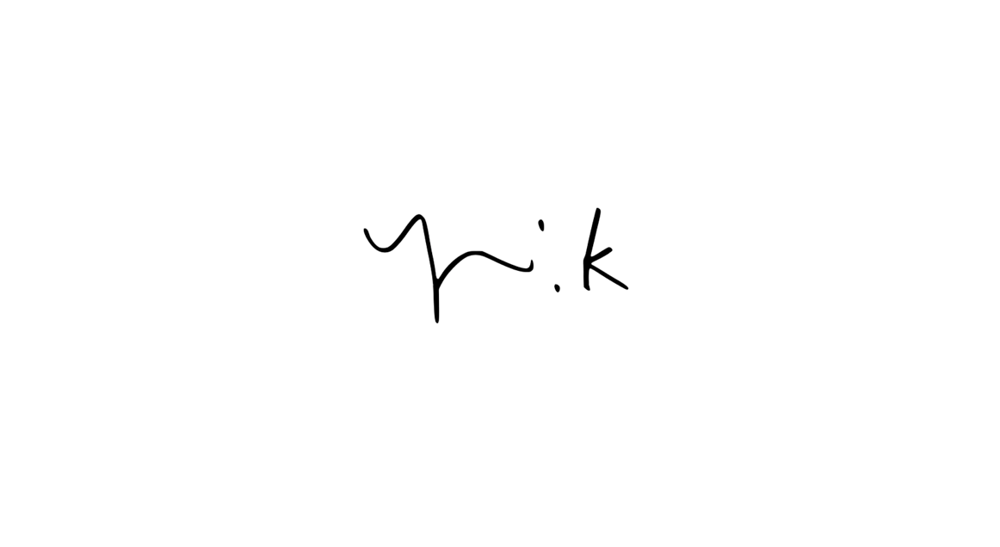
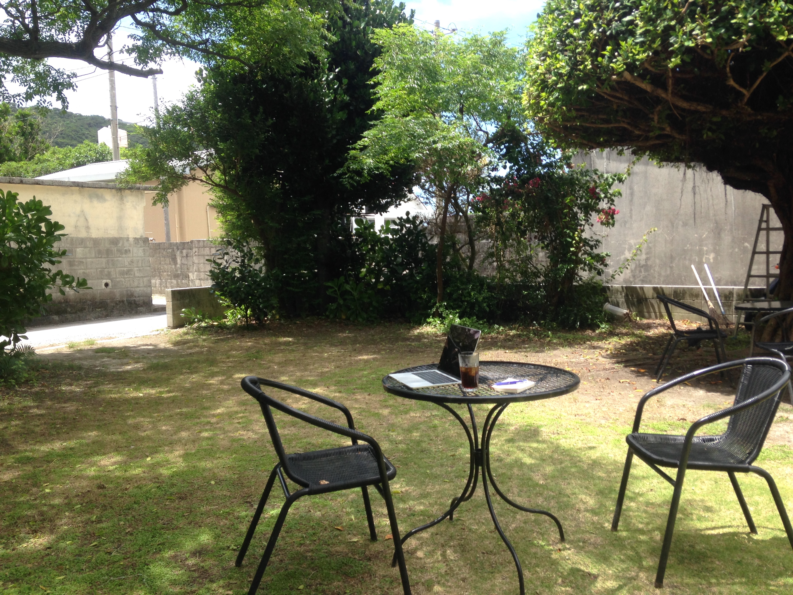
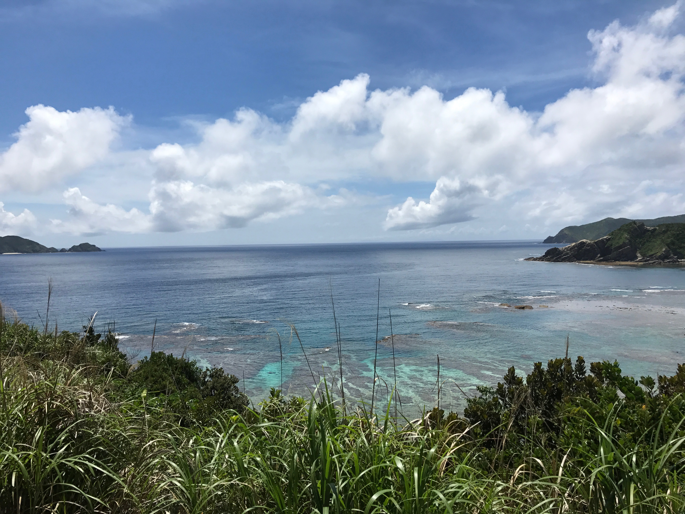
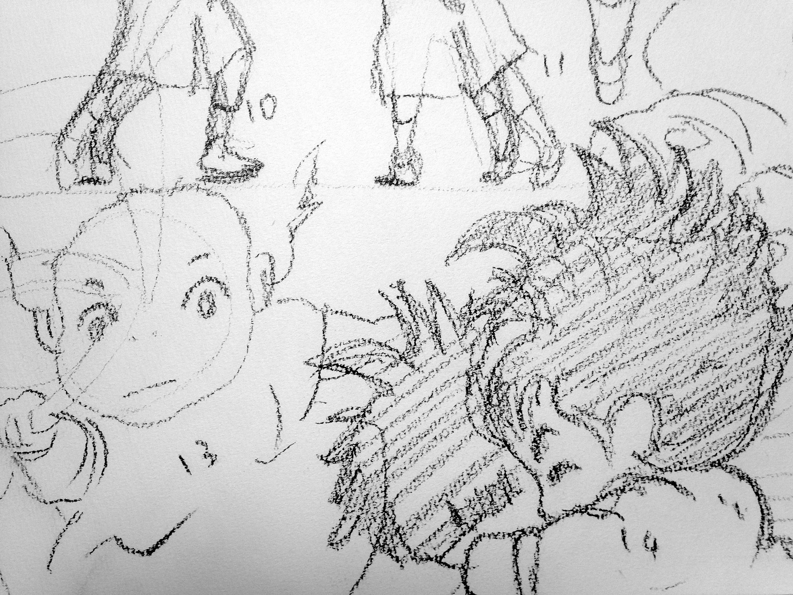

Yui Kita's Blog
Ph.D Candidate @ The University of Tokyo, Computer Science
HOME
Augst 2017
{kind=link}
Started working as a designer I'm little wondering what my title should be. Ph.D student? M.S.? Hopefully Ph.D in next year. I changed my title as "designer". The definition of designer is may be someone who is sensitive to visual asepct or how a product would be seen. Well, quite unclear, but I think that is what I am. I want to contribute to the beauty of product including its visual aspect and function from a perspective that takes means as palette and results as drawings. Let's see what happen.
Jun 2017
{kind=link}

{kind=link}
Zamami Island I had a summer vacation at a small island in Okinawa. We spent mornings for swimming in the beautiful sea, afternoons at a cafe. We also worked hard with opening our favorite laptops and books. We also visited Aka island where we climbed a mountain under a hard sun shine. This was really hard (but will be a part of memory). Aka island is neighborhood of Zamami island. The area around the island is one of the most beautiful sea in the world where lots of divers visit. I hope I will be diving next time.
Mar 2016


{kind=link}
Painting I painted a fish in watercolors. Less water was used on the top to make the skull looks much harder than the bottom. The paper is little embossed which is used to express scales (bottom). In this part, more water was used compared with the top. The yellow dots represent spindrifts or shines of water. This yellow is inspired by Hayao Miyazaki's animation film "Ponyo on the Cliff by the Sea". The drawing bottom is my drawing of scenes from the film.